When evaluating a Bezier curve, I start with the original control points and a parameter \(t\) between 0 and 1. De Casteljau's algorithm evaluates the curve by repeatedly doing linear interpolation between neighboring points. If the current level has points \(p_0, p_1, p_2, \ldots\), then the next-level point is computed as \((1 - t) \cdot p_i + t \cdot p_{i+1}\). Repeating this step reduces the number of points by one each time until only one point remains, and that final point lies on the curve.
In my code, I implemented BezierCurve::evaluateStep to do exactly one level of this process.
The function takes a vector of points and returns a new vector that is one shorter.
I loop through the input points, compute the lerp using the member variable t, and push the results into a new vector.
Since this is only one step, pressing E in the GUI shows the intermediate points level by level, and the curve is drawn when I toggle C.
The screenshots below show each level of de Casteljau evaluation on a 6-control-point Bezier curve:
|
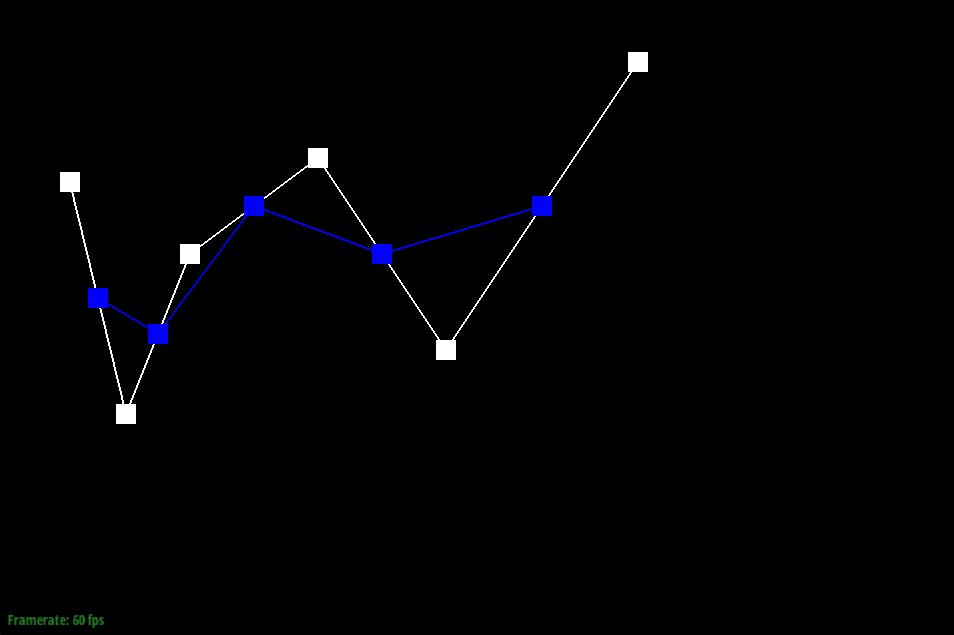 |
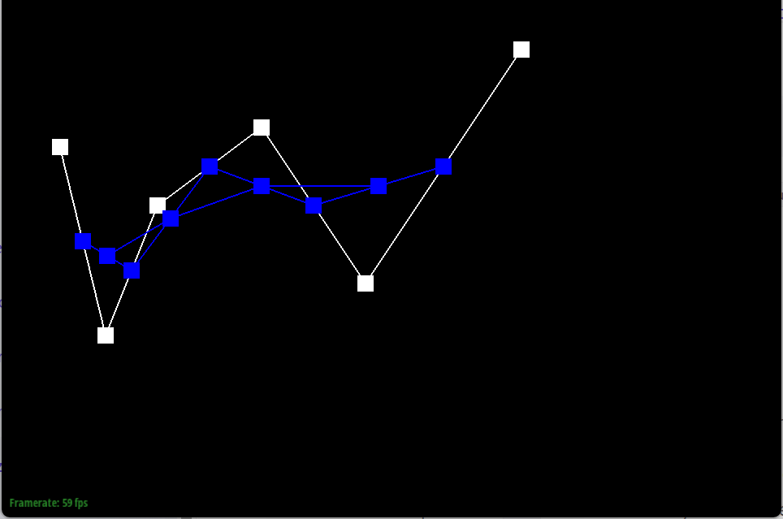 |
|
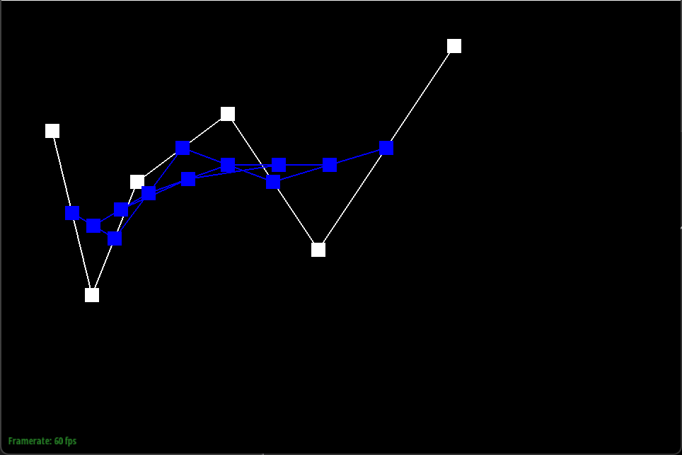 |
|
|
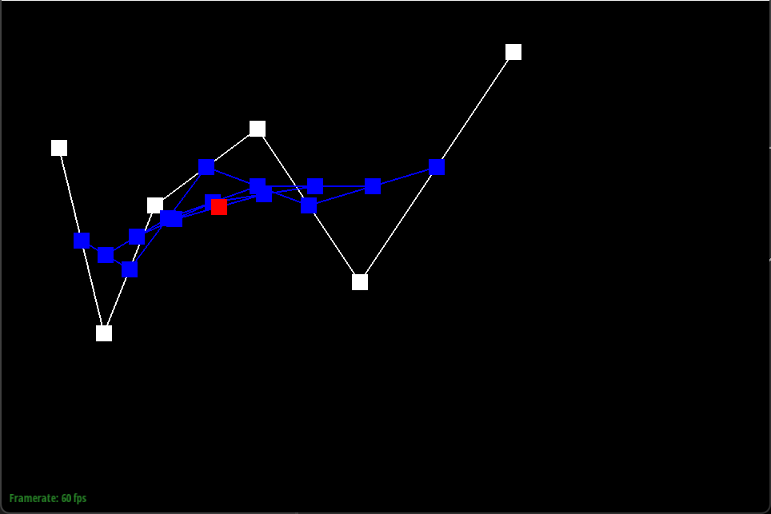 |
|
The completed Bezier curve toggled on:
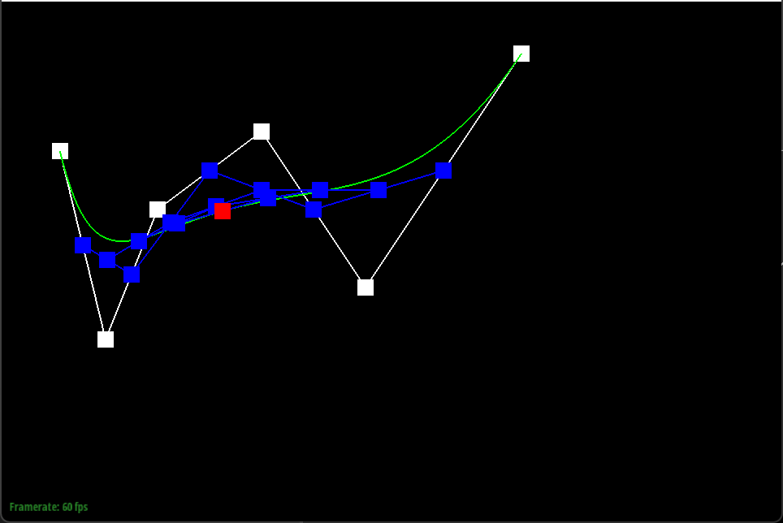
A slightly different Bezier curve with modified control points and a different value of \(t\):
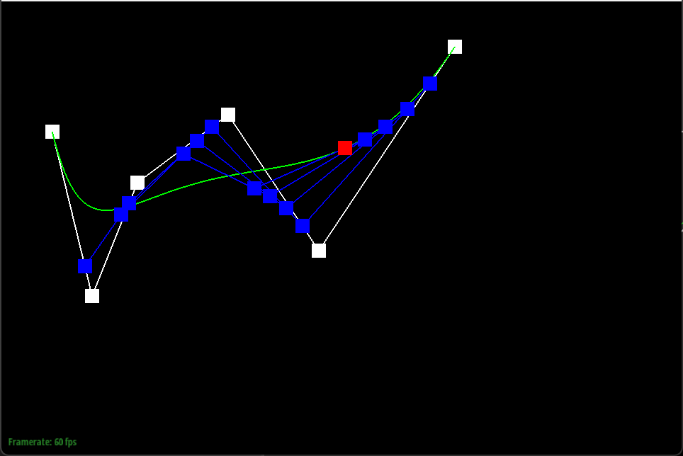
For Bezier surfaces, I used the same de Casteljau idea from Part 1, but applied twice because the surface has two parameters \(u\) and \(v\). The control points form a grid, so I first treat each row of control points as a Bezier curve and fully evaluate that row at \(u\). This gives one 3D point per row. Then I treat those row results as another Bezier curve and fully evaluate again at \(v\). The final point is the point on the Bezier surface at parameter \((u, v)\).
In my code, I implemented evaluateStep for 3D points using the same lerp formula between neighboring points.
Then evaluate1D repeatedly calls evaluateStep until only one point remains.
Finally, evaluate(u, v) runs evaluate1D on every row with \(u\), stores the results,
and runs evaluate1D one more time on that list with \(v\).
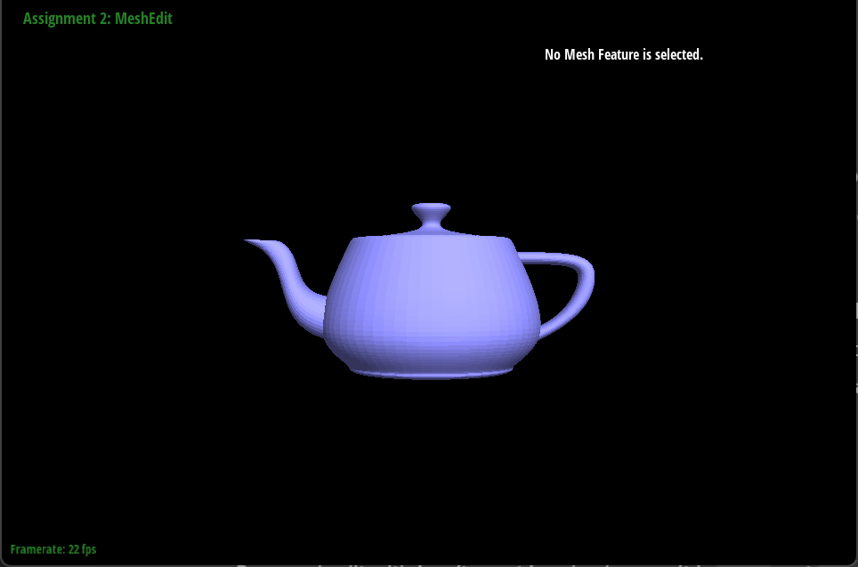
I computed a smooth normal at each vertex by averaging the normals of the triangles that touch that vertex.
I used the half-edge structure to walk around the vertex: starting from the vertex's half-edge,
I repeatedly go to twin() and then next() to visit each face around the vertex one by one.
For each non-boundary face, I grab the three triangle vertices using h, h->next(), and h->next()->next().
To get the face normal, I form two edge vectors from the triangle and take their cross product. The magnitude of the cross product is proportional to the triangle area, so summing these up naturally gives an area-weighted normal. After summing all face contributions, I normalize the result to get a unit normal. Pressing Q in the GUI switches from flat shading to smooth Phong shading using these vertex normals.
|
|
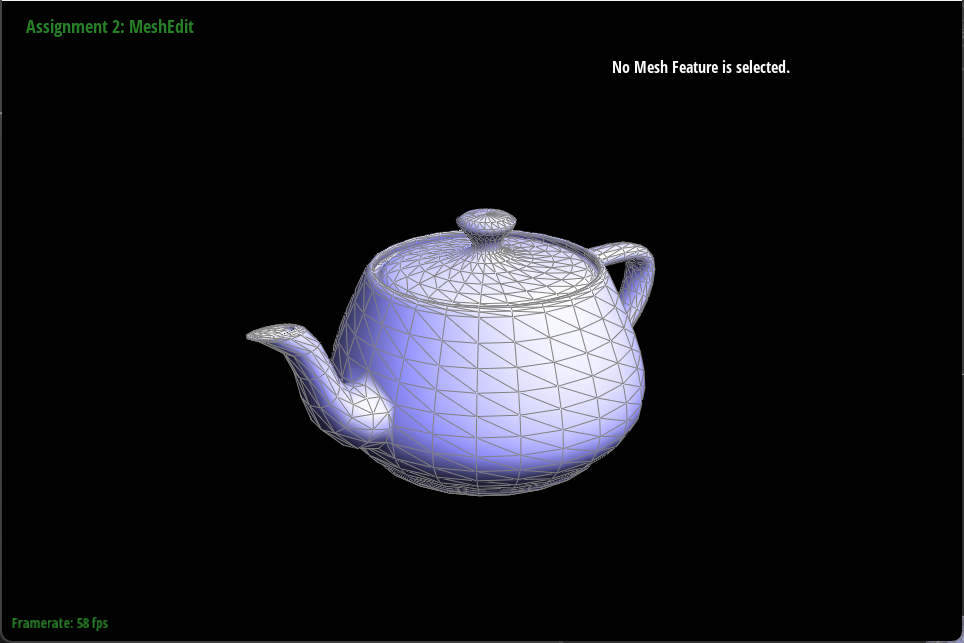 |
For edge flip, I only change the mesh connectivity around the selected edge. The idea is that two triangles share one edge, and flipping replaces that shared edge with the other diagonal of the quad formed by the two triangles. In the half-edge structure, this does not create or delete anything — I keep the same vertices, edges, faces, and half-edges, and just reassign pointers.
In my implementation, I first check if either of the two adjacent faces is a boundary face and return early if so.
Then I label the two half-edges of the chosen edge, the other four half-edges around the two triangles, and the four vertices \(a, b, c, d\).
After that I update the next, vertex, face, and edge pointers so the two new triangles
form correct CCW loops. At the end I also update the face and vertex halfedge pointers to make sure they still point to valid outgoing half-edges.
A trick that helped me was flipping the same edge multiple times and also flipping nearby edges to verify that nothing crashes and no holes appear in the mesh.
|
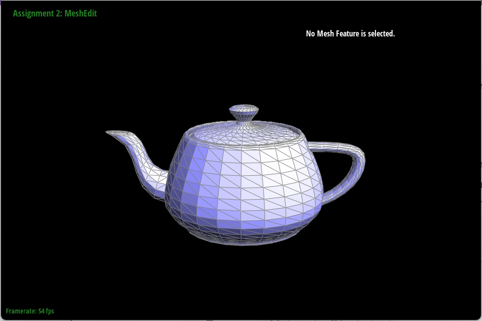 |
|
For edge split, I take one interior edge shared by two triangles and insert a new vertex at the midpoint of that edge. After adding this new vertex, I connect it to the two opposite vertices from the two triangles, so the original two triangles become four smaller triangles. Compared to edge flip, this operation is harder because it creates new mesh elements — I had to create a new vertex, new edges, new faces, and new half-edges, and then link all pointers correctly.
In my implementation, I first check if the edge is on the boundary and return early if so.
Then I label the two faces around the edge and the six half-edges in those two triangles, along with the four vertices around the edge.
I create the midpoint vertex and set its position to the average of the two endpoint positions.
I reuse the original edge as one of the two halves of the split edge, and create three new edges to connect the new vertex to the other endpoints and the opposite vertices.
Finally, I update all half-edge next, twin, vertex, edge, and face pointers so that each of the four new triangles forms a correct CCW loop.
A debugging trick that helped me was to split an edge, then flip nearby edges, then split again — doing operations in different orders quickly exposes any wrong pointer assignment.
|
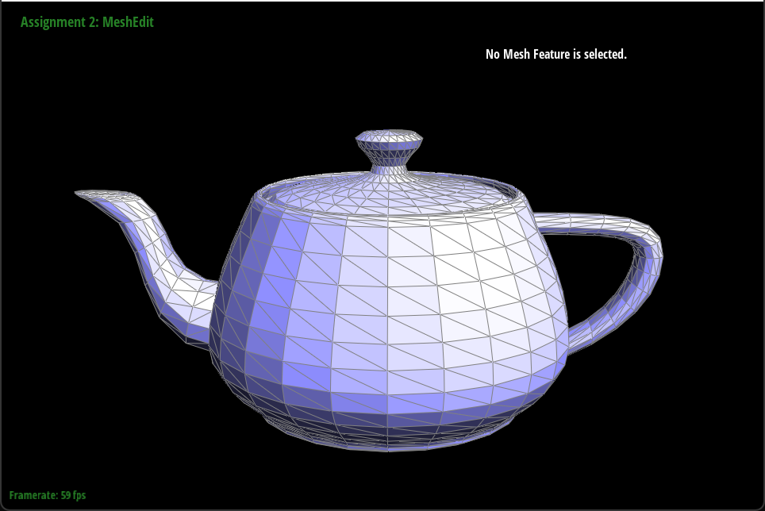 |
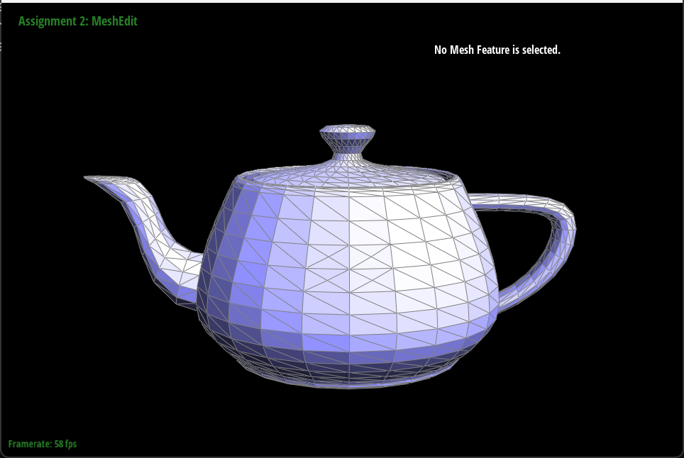 |
|
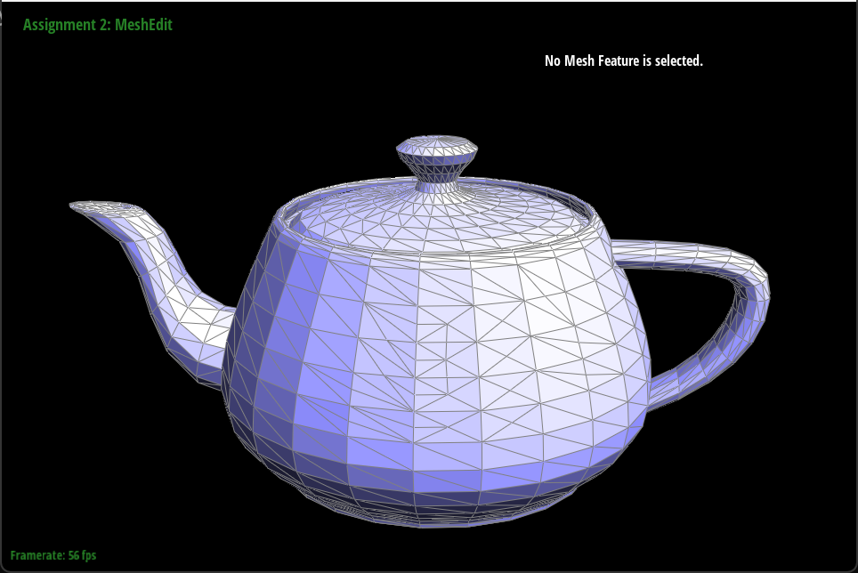 |
|
For loop subdivision, I upsample the mesh by first creating more triangles and then smoothing the vertex positions. I do this by splitting all original edges so each old triangle turns into four smaller triangles. After splitting, I flip the new edges that connect one old vertex and one new vertex, because those flips make the triangulation match the loop subdivision pattern.
Before changing the mesh connectivity, I compute all updated positions using the original mesh and store them.
For old vertices, I compute a weighted average based on the vertex degree and store it in Vertex::newPosition.
For each original edge, I compute the position of the new midpoint vertex using the loop weights and store it in Edge::newPosition.
After finishing all splits and flips, I copy newPosition into position.
A trick that helped was marking old and new vertices and edges using isNew,
and storing the list of original edges first so I only split each original edge once.
Sharp corners and edges get rounded quickly after loop subdivision because the weighted average pulls each vertex toward its neighbors. The teapot below shows this progressive smoothing: features that were sharp at level 0 become increasingly rounded at levels 2 and 4. Pre-splitting edges near a sharp feature helps because it makes the smoothing more local — the rounding stays concentrated near the edge instead of pulling the whole surrounding face, so the overall shape is better preserved.
|
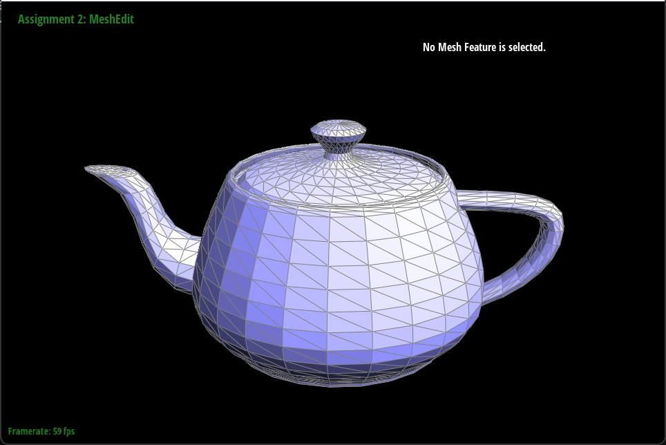 |
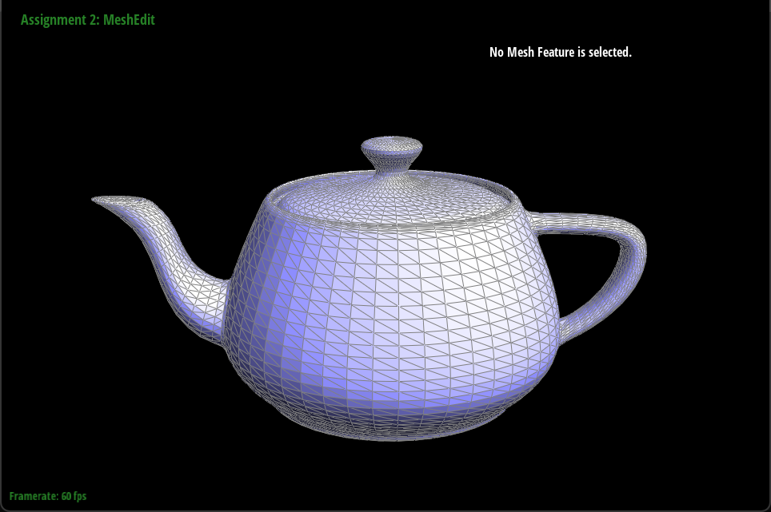 |
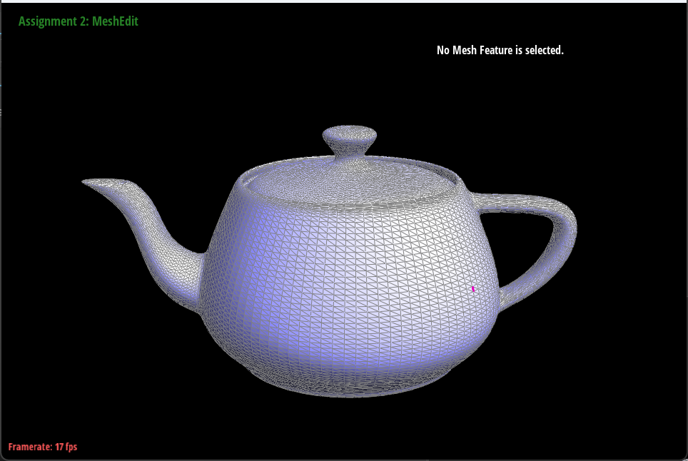 |
When I load dae/cube.dae and repeatedly subdivide, the cube becomes asymmetric. This happens because each face of the cube
starts with only one diagonal edge, so the two triangles on each face are not symmetric with respect to the face center.
Loop subdivision's weighted averaging inherits this asymmetry: vertices near the diagonal are weighted differently from vertices far from it,
so the cube drifts into a lopsided rounded shape.
|
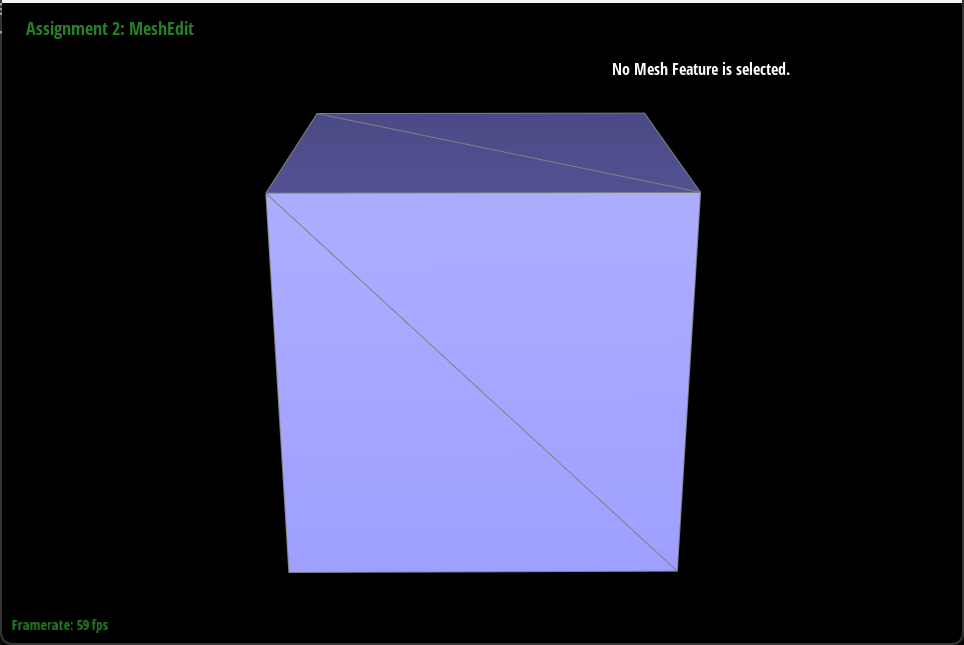 |
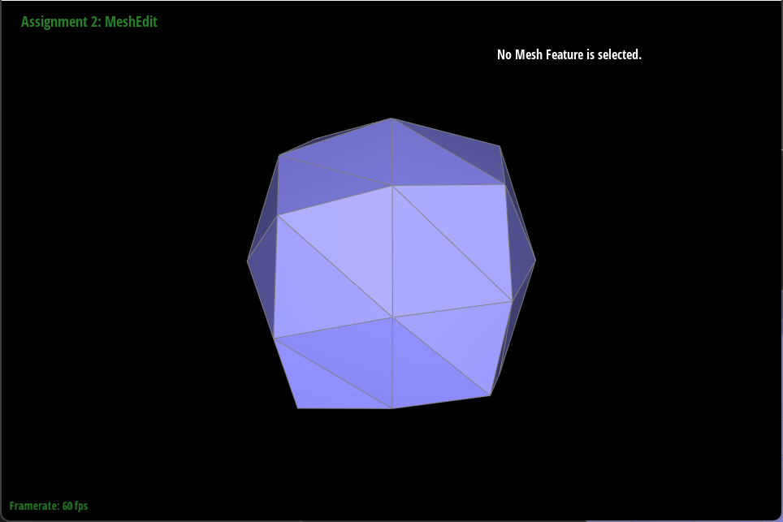 |
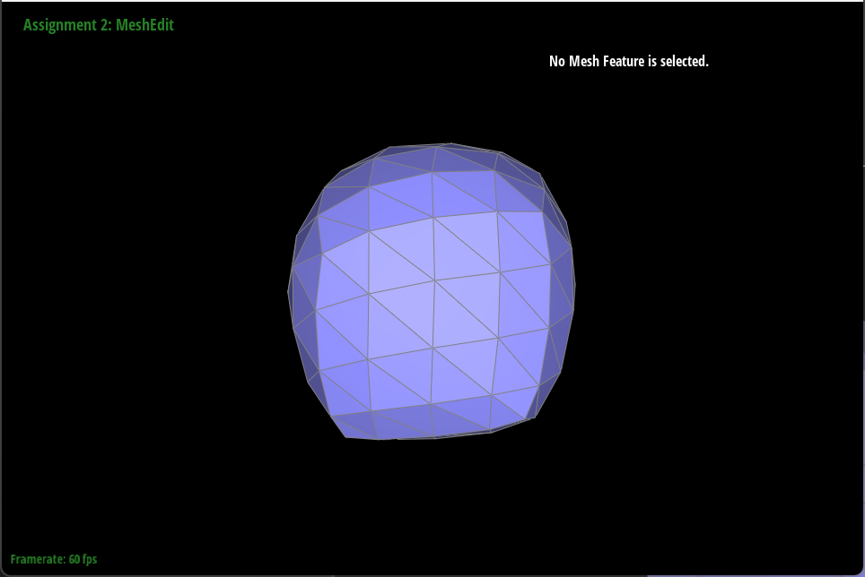 |
To fix this, I pre-processed the cube by splitting the diagonal edge on each face so that every face has an X-shaped triangulation. This makes each face symmetric about both diagonals, so every corner vertex has the same valence and the same neighborhood structure. With this pre-processing, loop subdivision produces a shape that stays symmetric as the level increases.
|
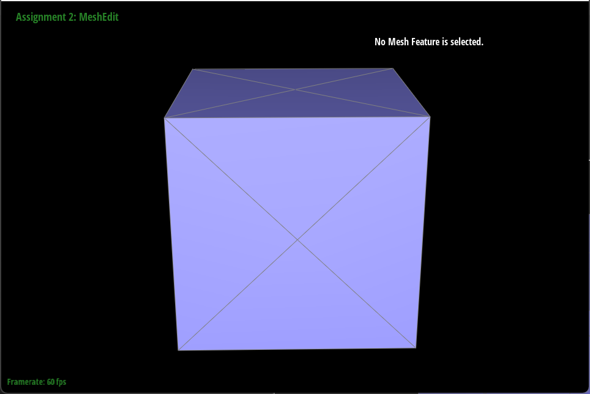 |
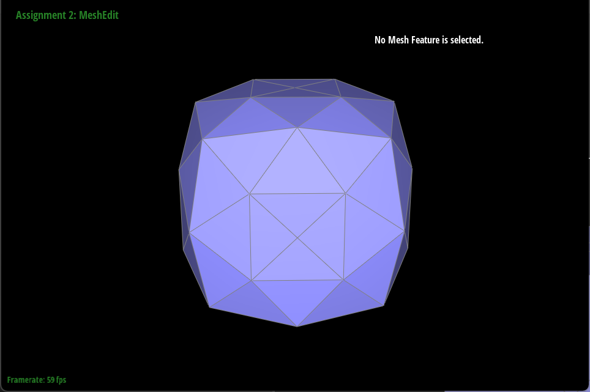 |
|
|
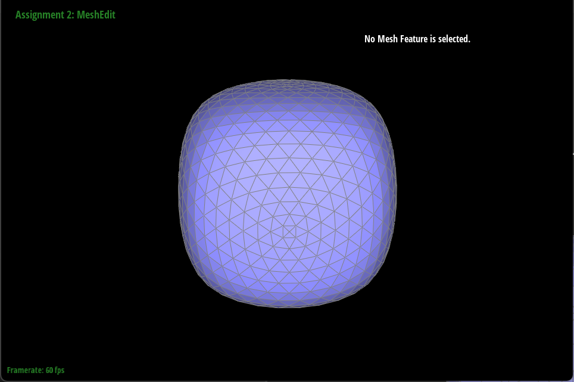 |